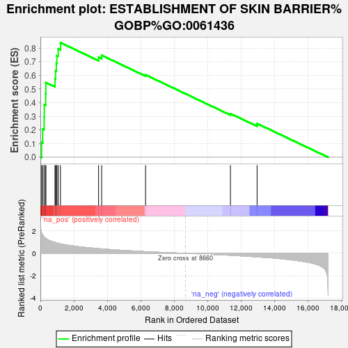
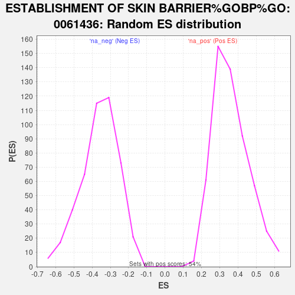

| | | Dataset | Tumour_vs_PDO |
| Phenotype | NoPhenotypeAvailable |
| Upregulated in class | na_pos |
| GeneSet | ESTABLISHMENT OF SKIN BARRIER%GOBP%GO:0061436 |
| Enrichment Score (ES) | 0.8403896 |
| Normalized Enrichment Score (NES) | 2.3198876 |
| Nominal p-value | 0.0 |
| FDR q-value | 0.0 |
| FWER p-Value | 0.0 |
Table: GSEA Results Summary

Fig 1: Enrichment plot: ESTABLISHMENT OF SKIN BARRIER%GOBP%GO:0061436
Profile of the Running ES Score & Positions of GeneSet Members on the Rank Ordered List
| SYMBOL | RANK IN GENE LIST | RANK METRIC SCORE | RUNNING ES | CORE ENRICHMENT | | 1 | TP63 | 73 | 1.817 | 0.1084 | Yes |
| 2 | FA2H | 137 | 1.653 | 0.2072 | Yes |
| 3 | TMEM79 | 225 | 1.498 | 0.2949 | Yes |
| 4 | FLG | 233 | 1.477 | 0.3861 | Yes |
| 5 | ALOXE3 | 318 | 1.355 | 0.4652 | Yes |
| 6 | KRT16 | 328 | 1.337 | 0.5476 | Yes |
| 7 | SFN | 874 | 0.976 | 0.5763 | Yes |
| 8 | HRNR | 907 | 0.960 | 0.6340 | Yes |
| 9 | CLDN1 | 955 | 0.940 | 0.6895 | Yes |
| 10 | IL18 | 988 | 0.925 | 0.7450 | Yes |
| 11 | ABCA12 | 1067 | 0.897 | 0.7961 | Yes |
| 12 | CLDN4 | 1203 | 0.842 | 0.8404 | Yes |
| 13 | LSR | 3479 | 0.418 | 0.7339 | No |
| 14 | ALOX12 | 3663 | 0.395 | 0.7477 | No |
| 15 | UGCG | 6288 | 0.149 | 0.6042 | No |
| 16 | STMN1 | 11360 | -0.174 | 0.3198 | No |
| 17 | MET | 12952 | -0.319 | 0.2469 | No |
Table: GSEA details [plain text format]

Fig 2: ESTABLISHMENT OF SKIN BARRIER%GOBP%GO:0061436: Random ES distribution
Gene set null distribution of ES for ESTABLISHMENT OF SKIN BARRIER%GOBP%GO:0061436